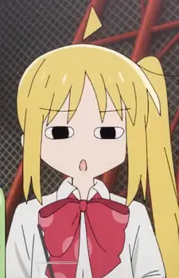

短诗一首🥺🥺
伊人倚门望,地老天荒长.
知我心头意,虹霞映日旁.
夏日微风凉,好景在前方:
可爱深红映,爱意向天光.
基本数据
本名
いじち にじか
伊地知 虹夏
(Jīchi Nijika)
别号
下北泽大天使、一妈妈、LED虹夏
发色
金发
瞳色
红瞳
身高
154cm
体重
48kg
年龄
17-18岁
生日
5月29日
血型
A型
星座
双子座
声优
铃代纱弓
活动范围
下北泽
所属团体
结束乐队
个人状态
下北泽高中二年级生→三年级生
角色介绍
伊地知虹夏(いじちにじか)是由はまじあき所创作的漫画 孤独摇滚!及其衍生作品中的登场角色.
简介
下北泽高校2年级生,结束乐队的鼓手兼队长.
元气温柔的气氛调节者,善解人意,能够细心地观察每个成员并给予关照.
在曾是乐队成员、现在是Livehouse STARRY的老板的姐姐的影响下,自幼接触乐队文化,梦想是组建人气超高的乐队.
邀请(生拉硬拽)小波奇加入结束乐队,另外山田凉也是她邀请加入乐队的.
责任心很强,作为乐队的队长以及唯一的正常人为乐队的各种事情尽心尽力(虹夏:要是一直在身后注视着她们的我都不认真的话可怎么办啊).
害怕阴森诡异的事物,对鬼屋很没辙.
角色的原型是乐队ASIAN KUNG-FU GENERATION的鼓手伊地知洁.
元气满满又开朗的高中二年级生,担任结束乐队的鼓手.
对加入到结束乐队中的小波奇给予了很多照顾,担任着乐队总管的角色.
姐姐伊地知星歌是Livehouse的店长.
对Livehouse有着特殊的感情.
经历
拉来山田凉和喜多郁代组建了「结束乐队」,然而喜多不久就逃走并导致吉他手缺失.虹夏焦急之时在公园与背着吉他的后藤一里相遇,邀请其加入「结束乐队」.
某一天中午在前往Livehouse的半路遇见喜多,在一里的调解下与喜多和好.喜多重新加入后,结束乐队基本成型.
虽然在排练时就有察觉,但在初次正式演出后确认了一里就是「吉他英雄」.
与山田凉是同班同学,关系很好.虽然经常吐槽凉,但还是像母亲一般地照顾凉(下北泽大天使).期中考试前发现凉的学习成绩奇差,遂带着凉从初中一年级的知识开始补习,此后又安慰陷入困境的凉找回了作曲的感觉.房间里一多半都被凉占领.老夫老妻.
为了驾驶乐队的器材车,于漫画48话同山田凉在驾校学习.
在漫画74话成功考上芳文大学,与同样录取的大槻悠悠子成为同校生.
杂谈
初设是装傻役,但由于台词很多,漫画3话左右就转型成吐槽役了.
动画版头上的近似三角形的呆毛是悬在空中的(伊地知星歌亦如此)祖传磁悬浮呆毛(本体).呆毛还会随心情变换动作和形态,萌系画风或简笔画时三角形的形状和悬浮状态会更加明显.
做题的时候每解开一道题头上的呆毛就会相当剧烈地来回晃动,但是遇到束手无策的题目时会根据呆毛的位置决定选项(虹夏:因为呆毛往右倾了所以是选3.)
(波奇:没想到那呆毛竟然还有这样的功能!).
虹夏呆毛的形状由于和多力多滋(Doritos)牌玉米片十分相似,成为了二创者们所喜爱的素材,例如下面这个「如何种植虹夏」的教程.
(虹夏生贺)如何种植虹夏甚至有人将其做成了游戏.游戏中玩家需要点击虹夏的呆毛并用玉米片的袋子收集掉落的呆毛,再喂给旁边出现的凉.
呆毛可以无限生长的虹夏吐槽时眼睛会变成猫猫眼.
是结束乐队四人中最矮的,同时也是四人中最年长的.
擅长画画,结束乐队的队服也是由虹夏设计.
设定里同时也是角色中相对最傻(指智商)的一个.
虽然自称成绩一般,但根据漫画中的考试表现来看,平时的成绩反而是乐队四人中最好的.
姐姐笨手笨脚,所以家务都是自己做,因此很能干.
设备
使用的手机型号为iPhone 11.
使用的鼓组TAMA Imperialstar
使用的军鼓是Pearl CS1450 Chad Smith签名款
使用的鼓槌是Pearl 7A.